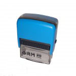
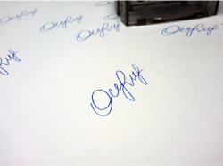
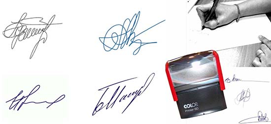

Изготовление факсимиле подписи в Киеве
Мы делаем очень точные копии подписей. Для того, чтобы заказать факсимиле подписи достаточно отправить нам фотографию или скан почту.
Изготовление факсимиле
 Ваша подпись изготавливается в виде автоматического или ручного штампа. Мы рекомендуем автоматическое исполнение (картинка слева). Это значительно повышает качество и срок службы, экономит массу времени и нервов. К тому же, вы никак не испачкаетесь в чернилах при переносе и использовании, а цена вопроса всего от 225 грн.
Профессиональный дизайнер справится с работой по созданию макета даже если предоставленная фотография будет уступать по качеству приведённой в примере выше. Помимо факсимиле существуют и другие виды штампов, мы также готовы изготовить их независимо от формы, размера и содержания.
Факсимиле, где можно использовать в 2017
Штампы, которые оставляют оттиск подписи, применяются довольно часто. Чем это обуславливается? Можно назвать две главные причины:
Во первых: большой документооборот в организациях — директорам и главным бухгалтерам приходится тратить много времени на то, чтобы на каждом экземпляре была поставлена личная подпись. С факсимиле подобная проблема уходит на второй план.
Во вторых: на время отсутствия (отпуск, деловая встреча, командировка) или занятости руководящего состава, бумаги высокой срочности подписываются максимально оперативно.
Гражданско-правовые сделки
Точный порядок использования, к сожалению, законодательством не установлен. По данной причине самым надёжным способом «узаконивания» применения факсимиле является соглашение двух сторон. Оно оформляется в виде отдельного документа либо в текст договора включается условие использования. Ключевым аспектом является перечисление важных документов, на которых можно ставить печати факсимиле. Только в таком случае оно будет гарантированно иметь юридическую силу. Этот немаловажный аспект, который не рекомендуется игнорировать.
Налоговый и бухгалтерский учет
Дискуссии, связанные с оформлением такой документации, длятся несколько лет. Причина споров вызвана тем, что закон не подчиняет регламенту порядок применения. На каких же документах категорически нельзя использовать? Перечень обширный, но довольно логичный:
 Проставление на документах, подразумевающих материальную ответственность, возможно исключительно при наличии действенного механизма установления достоверности важных бумаг. Обезопасить себя от возникновения неприятных проблем поможет написание внутренней инструкции. В ней будет полезно указать следующие моменты:
